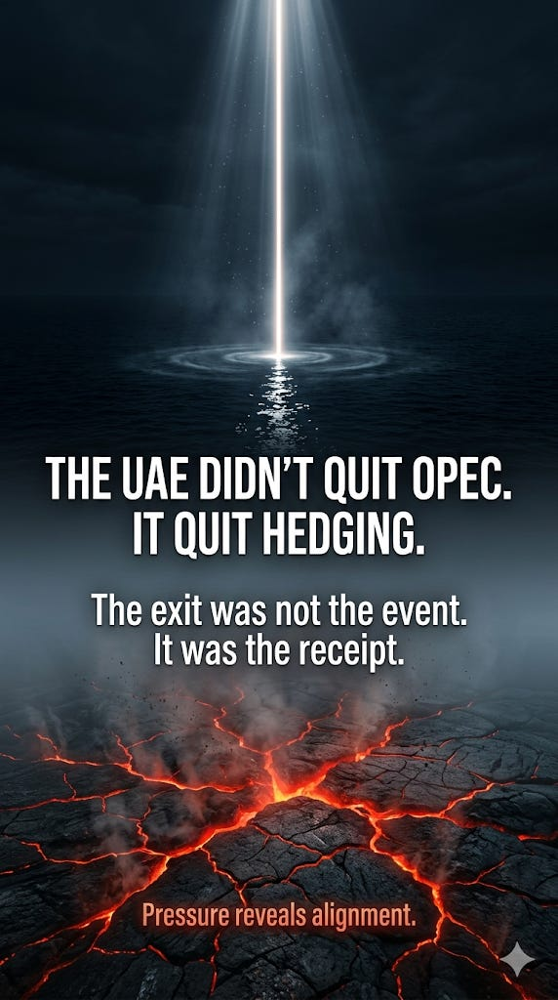

The official explanation is clean. UAE Energy Minister Suhail Al Mazrouei told CNN, CNBC, Reuters, and Bloomberg the same thing in slightly different sentences over twenty-four hours: this is a sovereign policy decision; the timing is right because the Strait of Hormuz is closed and market impact will be minimal; the UAE wants flexibility to pursue five million barrels per day of capacity by 2027; the move is “policy, not political.”
Each statement is technically defensible. None of them, individually or together, accounts for what actually happened.
The UAE has chafed under OPEC quotas for at least four years. The argument that the cartel was capping Abu Dhabi at roughly 3.2 mbpd while it wanted to drive toward 5 mbpd is not a 2026 argument. It was true in 2022. It was true in 2024. The capacity ambition predates the war, and the production-baseline friction with Saudi Arabia predates Yemen. If the UAE was leaving for capacity reasons, the leaving could have happened any time in the last three years.
It happened on April 28, 2026.
To understand why that date and not another, you have to read the official statement against the chronology that produced it.
The six weeks nobody is sequencing
February 28. The US and Israel strike Iran. Within hours, Iran begins missile and drone attacks against the UAE.
Late February through April. UAE air defenses intercept over 530 ballistic missiles, 26 cruise missiles, and more than 2,250 drones. The Habshan gas complex is hit. Borouge petrochemicals burns. Two UAE service members are killed, ten foreign-national civilians are killed, more than two hundred are injured. By late March, Gulf states have burned through 75–87 percent of their Patriot interceptor stocks.
March 26. The inaugural meeting of the US-UAE AI Acceleration Partnership working group convenes in Washington. The UAE reaffirms its $1.4 trillion US investment commitment. The Pax Silica Investor Consortium — Mubadala, SoftBank, Temasek — is announced to lock semiconductor supply chains into “trusted hands.” G42’s Regulated Technology Environment is publicly recognized as a “gold-standard framework.” The UAE keeps access to roughly half a million Nvidia chips per year.
April 7. Iran’s ambassador to Pakistan, Reza Amiri Moghadam, addresses Gulf states three weeks before the OPEC announcement. The phrasing matters: pay attention to your conditions and your relations with Iran. Sooner or later America will leave this region by accepting defeat, and you will stay. This is not a press release. This is Tehran putting the bet on the table.
Mid-April. UAE Central Bank Governor Khaled Mohamed Balama meets Treasury Secretary Scott Bessent and Federal Reserve officials in Washington. The topic is an emergency dollar swap line.
April 22. Bessent testifies before a Senate Appropriations subcommittee that “many” Gulf and Asian allies have requested swap lines. He defends the prospect on the record.
April 24. Bessent posts a public defense on X, framing extended swap lines as instruments of dollar primacy against “problematic, alternative payment systems.” Trump tells CNBC the same week: “If they had a problem... I would be there for them.”
April 26. Two events on the same Sunday. Secretary of State Marco Rubio speaks directly with UAE Foreign Minister Sheikh Abdullah bin Zayed Al Nahyan; the State Department readout reaffirms “U.S. commitment to the security of the Emirates.” That same day, Axios reveals what Israeli and American officials had not previously disclosed: early in the war, Israel deployed an Iron Dome battery and several dozen IDF operators to UAE soil after a direct call between Netanyahu and Mohamed bin Zayed. The system intercepted dozens of Iranian missiles. It was the first time Israel had sent an Iron Dome battery to another country, and the UAE was the first nation outside Israel and the United States to operate the system in active combat. A senior Emirati official, quoted in the Axios piece: “We are not going to forget it.”
April 27. Anwar Gargash, diplomatic adviser to the UAE president, addresses the Gulf Influencers Forum in Dubai at a session titled “Reassessing Alliances in Times of Tension.” He criticizes the GCC response to the Iranian attacks as “the weakest historically.” This is unusual. This is a senior foreign-policy figure publicly attacking Gulf solidarity from inside a Gulf state, in a Gulf forum, the day before the OPEC announcement.
April 28. The UAE announces it will exit OPEC and OPEC+ on May 1. The energy minister insists the move is policy, not political. Saudi Arabia, by his own admission, is not consulted. The same day, Saudi Arabia hosts an emergency GCC summit in Jeddah — the first in-person Gulf leaders’ meeting since the war began. Sheikh Abdullah bin Zayed flies to that summit hours before the OPEC announcement breaks.
A photon of truth
Read the chronology and the question changes shape.
It is no longer “why is the UAE leaving OPEC.” That question accepts the framing. The framing is the surface.
The actual question is: what is the UAE buying, and what is the OPEC exit the price of?
What Abu Dhabi is acquiring, in roughly the same window: continued access to advanced US AI chips at scale; a likely emergency dollar swap line through the Treasury’s Exchange Stabilization Fund; an operational US-UAE-Israeli air defense architecture on UAE soil, now publicly disclosed; the “trusted partner” seat in the emerging Pax Silica chip-supply alignment; and direct senior-level access — Bessent on the Senate floor, Rubio on a Sunday phone line, Trump on television saying “if I could help them, I would.”
What the UAE is paying: a public, formal departure from a cartel that the US president has spent eight years calling a swindle; an open break with Saudi-led Gulf solidarity, with Gargash’s GCC criticism functioning as the rhetorical stamp; and the quiet acceptance of a new position — US-aligned satellite rather than multivectoral middle power.
The OPEC exit is not the asset. It is the consideration.
The official statement says the timing is right because the market impact will be minimal. The structural reading is more specific: the timing is right because, with the Strait closed, the move costs the UAE almost nothing in immediate revenue and gains it nearly everything in alignment value. The cost is paid by Saudi Arabia, whose cartel has just lost its most consequential non-Saudi member at its most fragile moment. The UAE is paying with a currency that is mostly Saudi.
This is not a story about cartel quotas. This is a story about which side of a re-forming order the UAE has chosen to live on.
Zoom out: the order being assembled
The post-1973 oil architecture rested on three pillars: OPEC as cartel, Saudi-led management, petrodollar recycling. All three have been visibly stressed for years. The Iran war has accelerated all three at once.
The dollar’s share of global FX reserves has fallen to roughly 57 percent — a 25-year low. Iran has been pricing oil to China in yuan. Ships transiting Hormuz have at times paid tolls to Iran in Bitcoin. Deutsche Bank economists have called the conflict a possible catalyst for “petroyuan” emergence.
Inside this slow-motion fracture, Washington is not trying to preserve the old system. It is building a smaller, sharper, more conditional one. Pax Silica is one expression. Conditional swap lines are another. Iron Dome on Emirati soil is another. The US-UAE AI Acceleration Partnership is another. None of these are extensions of the post-Bretton-Woods order. All of them are scaffolding for what is coming after it.
The UAE has chosen to be inside that scaffolding. That is what the OPEC exit ratifies.
The Saudis are not in the new architecture in the same way. They are deliberately not in it — yet. MBS visited Washington in November 2025; the relationship has been complex; Saudi Arabia maintains its working relationship with Russia through OPEC+ and its 2023 normalization with Iran through Beijing. The Saudi bet, for now, is multipolar hedging. The Emirati bet, as of Tuesday, is not.
OPEC has lost members before. Qatar left in 2019, but Qatar produces almost entirely natural gas. Angola left in 2024, but Angola’s output was modest. The UAE is categorically different — second only to the Saudis and the Iraqis in production, second only to the Saudis in spare capacity, the most consequential producer outside Riyadh’s direct chain of influence. Its departure does not technically end OPEC. It formalizes what was already structurally true: OPEC was a coalition of convenience, not a structural alliance, and the Iran war exposed the difference.
The counter-photon
Tehran’s frame is on the record, and it preceded every alignment move described above. Sooner or later America will leave this region by accepting defeat, and you will stay. That sentence was issued before Bessent’s swap-line testimony, before the Iron Dome public disclosure, before the Gargash GCC speech, before the OPEC announcement. Tehran put the bet on the table first. Abu Dhabi took it anyway.
This is the structural risk inside the UAE’s bet. Abu Dhabi is paying durable geopolitical capital — Gulf solidarity, Saudi alignment, Arab-League standing, the optionality of multivectoral hedging — in exchange for guarantees from a power whose long-term presence in the region is exactly what is in question.
If the Iranian frame turns out to be more accurate than the Washington frame, the UAE has just made itself the most exposed state in the Gulf: visibly aligned, visibly dependent on American protection, geographically adjacent to a regime whose patience now has a name and a memory. If the Washington frame holds, the UAE has bought itself a generation’s seat at the inner table of the new order, while the Saudis spend the next decade discovering that managing a cartel of two is not the same as leading a cartel of twelve.
The UAE has placed the bet. The market will not price it for years.
The line worth keeping
The official explanation is that the UAE is leaving OPEC because the timing minimizes disruption.
The structural reading is that the UAE is leaving OPEC because hedging has become more expensive than aligning, and Washington has been quietly collecting the down payment for six weeks.
The OPEC exit is not the event.
The OPEC exit is the receipt.
Undomesticated AI False surfaces. Hidden fractures. Reality under pressure.
The full verification pass — including source-bound chronology, corrections, and counter-arguments — is available to paid subscribers.